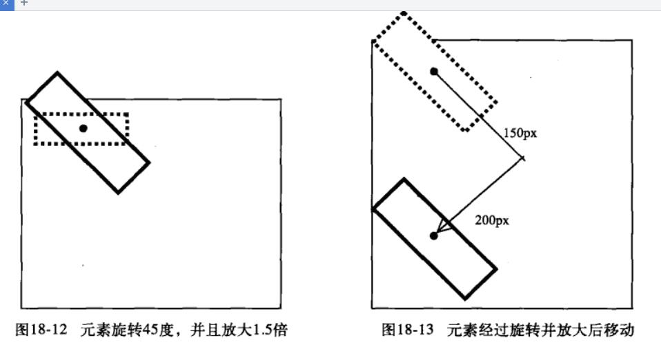

transform详解
1,旋转——rotate(读数deg)-正值为顺时针方向，负值的话会是逆时针方向
单个测试 原图
单个测试 rotate
2,缩放——scale(水平方向,垂直方向)可以是一个，表示整体；int整数值表示放大，float浮点值小数表示缩小倍率。负值的话会倒着翻过来.不用单位
单个测试 原图
单个测试 scale
总结：scaleX();scaleY();可以這兩個這樣單獨的設置，就可以单独设置是x轴缩放还是y轴缩放了，或者设置两个值得时候，其中一个设为0也可以这种效果*/
3,移动——translate(x方向px,y方向px)可以是一个，表示x方向
单个测试 原图
单个测试 translate
总结：如果你全部写完了，但是效果还是出不来，发现代码也都正确，那请你检查一下translate属性的括号中是否有逗号，自己写的习惯是总是用空格代替这个逗号，总是把这个逗号丢掉，没有逗号，不报错也不显示效果,这真可怕！！translate(Xpx,Ypx);
4,倾斜——skew(水平方向deg，垂直方向deg)可以是一个，表示水平方向,可以为负值
单个测试 原图
单个测试 skew
总结：skewX();skewY();可以這兩個這樣單獨的設置，就可以单独设置是x轴倾斜还是y轴倾斜了，或者设置两个值得时候，其中一个设为0也可以这种效果*/
5.接下来对一个元素综合使用多个变形方法制作一个案例。
注意：这几个变形使用的顺序不一样，效果也不一样.对比如下，很明显啊
综合使用效果 原图
综合使用效果-顺序1
综合使用效果-顺序2
综合使用效果-顺序3
总结：2和3的效果一样，看来，只要平移和旋转的前后顺序有调整就会有变化，不关缩放的事情
这是因为
1.元素的中心点总是在最中间的，而水平平移的方向也是左右，垂直平移的方向是上下。如果先平移，元素的水平和垂直的准线还是和二维坐标的xy轴平行的。自然最后旋转是从中心点旋转不会有影响。
2.但是若先旋转，那么元素的水平线和垂直线都发生了转动，再进行平移的话，就是在旋转后的方向基础上向前移动。具体见下图
先平移后旋转

先旋转后平移
6.transform-origin改变动画变形的基准点
我是没有设置origin的
我是设置了origin的
總結：共有兩個屬性需要填寫《水平，垂直》：水平有三個點：left，center，right；垂直的有三個點：top，center，bottom
7.最后综合，来个鼠标移动上去变换效果
最后综合，来个鼠标移动上去变换效果
2016.08.10 00:06;by xing.orgl^